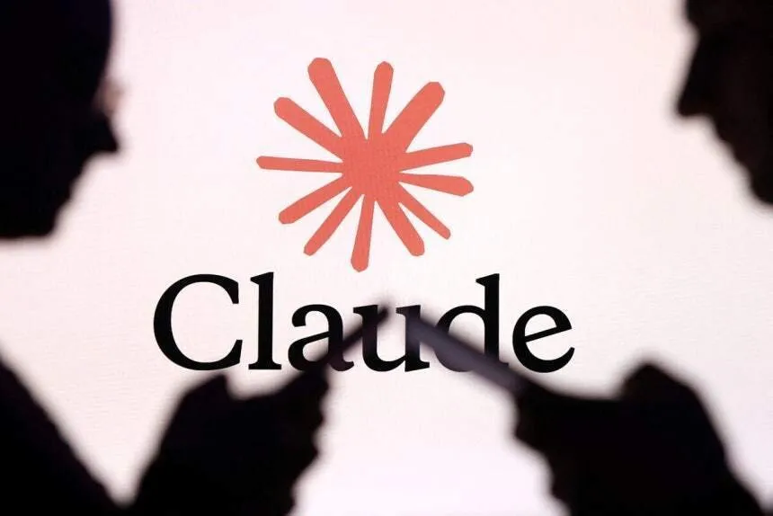

01 · GLOBAL
클로드가 푼 리만가설, 코드는 통과했지만 설명은 남았다
형식 검증 → 인간 이해
앤트로픽 연구원이 클로드와 함께 리만가설의 증명을 발견했다고 주장하며 1,700만 줄의 Lean 코드를 공개했다. Lean·Mathlib 개발진은 코드 검증 결과에 확신을 표했지만, 사람이 읽고 이해할 수 있는 수학적 설명과 최종 평가는 아직 남아 있다.
한겨레 원문 ↗ADDIT INSIGHT
형식 검증을 통과한 결과도 조직의 의사결정에 바로 쓰려면 설명 가능성·재현성·독립 검토를 별도로 설계해야 한다.